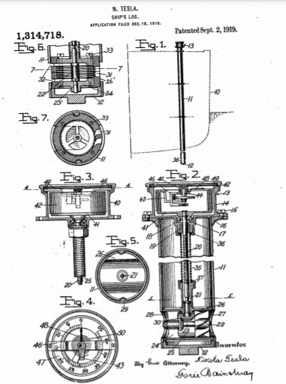

Descarga la patente original en esté enlace


Que se sepa que yo, NIKOLA T ESLA , ciudadano de los Estados Unidos, que reside en Nueva York, en el condado y en el estado de Nueva York, he inventado ciertas mejoras nuevas y útiles en los registros de los barcos, de las cuales la siguiente es una , descripción clara y exacta.
Mi invento proporciona un registro de barco de construcción y operación novedosas y ventajosas, diseñado para dar lecturas de velocidad instantáneas, como en nudos o millas por hora. El tronco habitual se arrastra a popa, girando el conector flexible que acciona un cuentarrevoluciones en la embarcación, y muchas desventajas de tal disposición son obvias.
En mi instrumento combino muy ventajosamente una hélice que puede girar proporcionalmente a la velocidad del barco y un indicador de velocidad impulsado por él y que lee directamente en los términos deseados, preferiblemente en una escala graduada sustancialmente uniforme.
En los dibujos, la Figura 1 muestra un diagrama del registro en uso;
La figura 2 lo muestra en sección vertical;
La figura 3 ilustra partes del indicador de velocidad con la carcasa rota.
La figura 4 es una sección por la línea 4-4 de la figura 3;
La figura 5 es una sección por la línea 5-5 de la figura 2.
La Fig.6 muestra en sección una forma de turbina de hélice, y
La figura 7 es una sección por la línea 7-7 de la figura 6.
Al buque 10, preferiblemente cerca de su proa, se fija adecuadamente un tubo o barril, 11, con un tapón roscado 12 que cierra su extremo inferior, donde el tubo cae preferiblemente por debajo del nivel de la quilla del bote. En la parte superior, cerca de la plataforma u otro punto de observación, está montado el indicador de velocidad 13, su carcasa 14, que lleva todas las partes móviles, está asegurada de manera desmontable, como mediante tornillos 15, a la brida superior 16 del cañón. . Un saliente 17 en la parte inferior de la carcasa 14 soporta el rodamiento de bolas 18 para el elemento primario del indicador y una junta 19 para su eje de transmisión flexible 20 que se conecta preferiblemente a través de una unión cuadrada de junta deslizante, 21, a una parte accionada por hélice. La hélice puede ser de forma común como se muestra en la Fig.2, en 22,
Más ventajosamente en algunos aspectos, sin embargo, se puede emplear una hélice de turbina de construcción simple, como se muestra en las Figs. 6 y 7. En este caso, el rotor tiene un eje vertical 23 ' y la rueda 22 ' está formada por discos delgados, paralelos y poco espaciados, cada uno de los cuales tiene una abertura central. La rueda está dispuesta en una carcasa cilíndrica 26 ' que tiene boquillas de entrada 31 y puertos de salida 32 dispuestos de manera que el agua ingrese tangencialmente a los espacios intermedios entre los discos para girar la rueda y encuentre escape a través de los puertos 32 que comunican con los orificios centrales de la rueda. discos. Este tipo de construcción tiene muchas ventajas debido a su confiabilidad y eficiencia, pero es preferible que esté construido para permitir que los discos y la carcasa se limpien fácilmente, carcasa 26' estando hecho en dos secciones horizontales atornilladas juntas como en 33, cada sección tiene una cabeza desmontable 34.
Un manguito flexible y elástico longitudinalmente, 35, de tira de metal enrollado se sujeta en los extremos opuestos mediante tapones roscados 36 y 37 al saliente 17 y a una parte roscada en la carcasa de la hélice, de modo que el mecanismo de la hélice se sostiene desde la carcasa del indicador para remoción con ellos.
Al construir adecuadamente las partes sumergidas de bronce, esmaltarlas o hacerlas sustancialmente inmunes a la corrosión, se logra una durabilidad adecuada y la facilidad de remoción para limpieza, engrase, reparaciones, etc., hace que las partes bajo el agua sean fáciles de mantener. En buen orden. El eje flexible, conectado por deslizamiento en un extremo y su robusto manguito protector, fuerte pero flexible y extensible, libera los rodamientos de la tensión y hace que la conexión sea uniformemente eficiente en cambios de condiciones como temperatura, etc.
El indicador de velocidad 13 proporciona preferiblemente como su elemento primario 41 una copa de paredes múltiples, rápida en el eje 20, y como un miembro secundario, o indicador, una estructura 42 de copa invertida de paredes múltiples pivotada ligeramente construida, con el anillo paredes intercaladas en una relación sin contacto estrechamente adyacente para la transmisión del esfuerzo de giro de una a otra a través de películas intermedias del medio fluido contenido en la carcasa, como aire, en proporción aproximadamente lineal a la velocidad del primario. Específicamente, las copas secundarias dependen de un brazo 43 que sobresale del eje 44, que tiene cojinetes joya en el yugo 45 soportados por la pieza de puente, 46, que atraviesa la carcasa 14, y el dial 47, calibrado según una constante adecuada para leer en nudos. o millas por hora u otras unidades de velocidad, está soportado por la estructura de copa debajo de una mano fija 48 visible a través del cubreobjetos sellado 49. Un resorte en espiral 50, conectado en sus extremos respectivamente al elemento secundario pivotado y a un soporte fijo, resiste el desplazamiento pivotante de la indicación- miembro donante. El elemento secundario de luz, que responde de forma rápida y precisa aproximadamente directamente proporcionalmente a la velocidad del elemento primario impulsado por hélice, y poco afectado por temblores, cambios de temperatura y otras influencias externas, da lecturas suficientemente precisas en los términos deseados, mostrando cambios instantáneos de la velocidad del barco.
Lo que reclamo como mi invento es:
Fechado el 2 de septiembre de 1919.
Nikola Tesla.